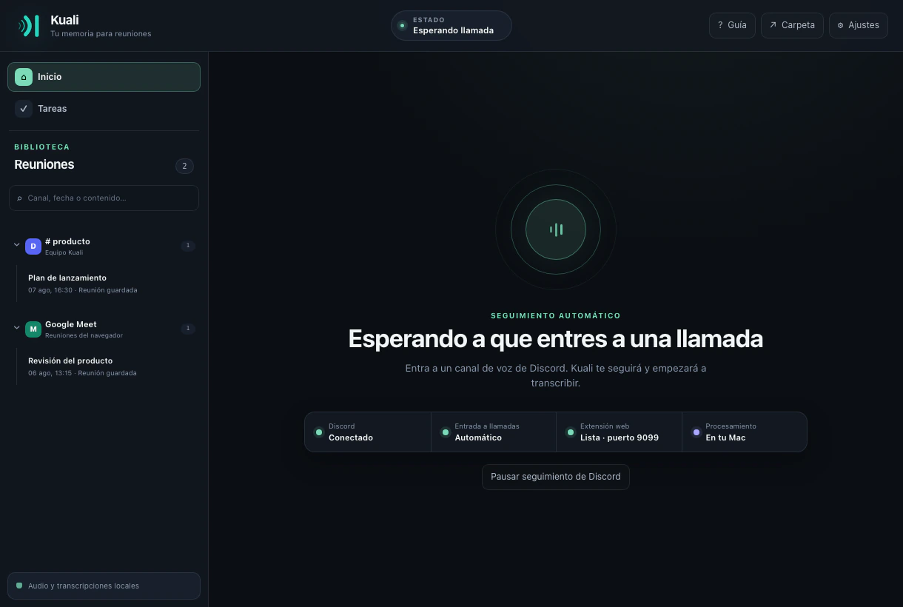

Instala una vez
Añade la extensión oficial desde Chrome Web Store en Chrome, Edge, Brave o Arc. Antes de sugerir grabar, comprueba que la aplicación esté disponible.
La extensión de Kuali lleva el audio y contexto de participantes directamente a la aplicación de escritorio. Whisper transcribe localmente mientras ocurre la reunión, sin depender de los subtítulos de Meet.

Kuali no copia el texto visible de subtítulos. La extensión observa participantes, silencio, actividad y pistas expuestas por Meet, y envía los datos de captura únicamente al receptor de loopback de tu computadora.
Añade la extensión oficial desde Chrome Web Store en Chrome, Edge, Brave o Arc. Antes de sugerir grabar, comprueba que la aplicación esté disponible.
Entra a la llamada y elige grabar. Kuali refleja actividad y silencio en vivo, manteniendo audio separado cuando Meet lo expone.
Cuando acaba la llamada, pestaña o conexión de captura, Kuali finaliza esa reunión y libera sus recursos de transcripción.
La extensión empaqueta todo su JavaScript y procesamiento de audio. Se conecta a la aplicación mediante 127.0.0.1, rechaza páginas web ordinarias y no sube la reunión a un servidor de Kuali.
La captura comienza únicamente tras una acción del usuario y la confirmación de consentimiento. El indicador permanece visible mientras la reunión está activa.
Kuali mantiene los ID como texto y actualiza nombres y avatares según Meet los expone. Cambiar de pestaña no debería renombrar a una persona conocida, y un participante silenciado no se marca como audible solo porque el dispositivo tenga micrófono.
Cuando Meet entrega una pista separada, Kuali la conserva. Si un modo de reunión solo ofrece audio mezclado, la fuente se etiqueta honestamente en lugar de inventar la atribución.
Silero retira teclado, zumbidos, golpes y otros fragmentos que no son voz antes de llegar a Whisper. Desde la app eliges modelo, idioma, carpeta de pesos y vocabulario especial.
El PCM se procesa en memoria y no se conserva como grabación. La transcripción y metadatos permanecen dentro del directorio local de Kuali.
La reunión finalizada se puede buscar por título, participante, fecha, origen y palabras de la transcripción. El procesamiento opcional con LLM puede generar título corto, resumen, puntos clave, decisiones, preguntas y tareas asignadas.
Los Standard Webhooks firmados pueden enviar el registro a las herramientas que suscribas. Ni los resúmenes ni webhooks se activan sin tu configuración.
El flujo de Meet tiene pruebas específicas de captura, participantes, silencio, ciclo de vida y extremo a extremo. Microsoft Teams y Zoom siguen experimentales y pueden entregar información incompleta en algunos modos.
No. Captura audio y contexto, y luego transcribe con el modelo Whisper que corre en la aplicación. Por eso tampoco queda limitado al idioma seleccionado para subtítulos.
Desde la extensión hasta Kuali en la misma computadora mediante loopback. Kuali no opera un backend de audio o transcripción en la nube.
Sí. Kuali observa el estado del participante y deja de tratar al usuario local como audible cuando Meet lo marca como silenciado.
La aplicación detecta que murió la conexión, finaliza la reunión correspondiente y deja de mostrarla como si continuara escuchando.
La instalación oficial recibe actualizaciones del navegador automáticamente. Abre Kuali, descarga un modelo de Whisper y la extensión encontrará la aplicación local.